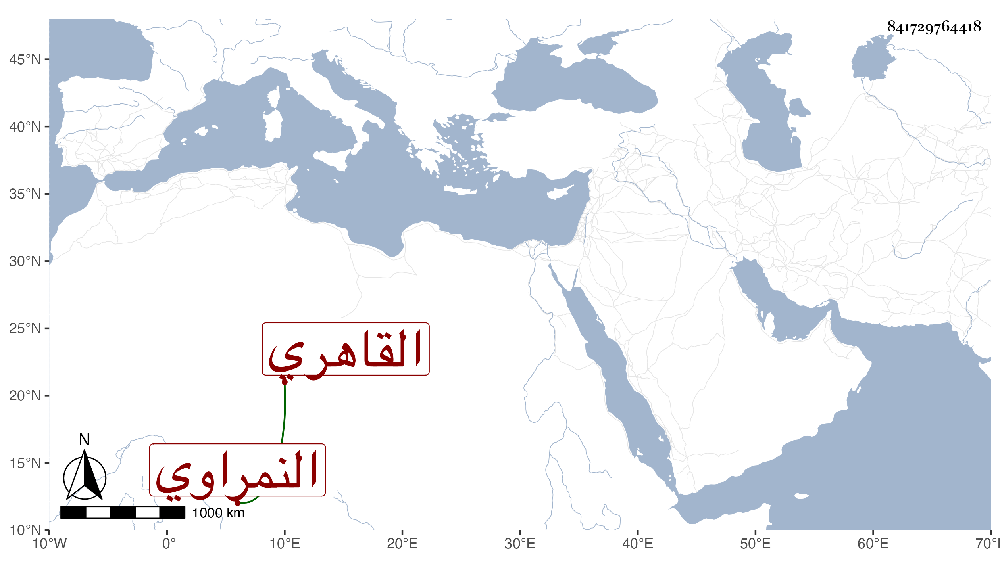

0902Sakhawi.DawLamic.ITO20230111-ara1.EIS1600.841729764418
Biography ID: 841729764418
687
محمد بن صالح النمراوي ثم القاهري والد عبد العزيز الماضي ويعرف بابن صالح . شيخ معتقد عند الغمري فمن دونه له أحوال صالحة وكرامات مذكورة مع ظرف ولطف وخفة روح بحيث كان شيخنا يستظرفه ، وقد انجذب وقتا ثم صار إلى الصحو أقرب ، وسمعت من يقول إنه كان يتستر وهو ممن سمع بقراءتي وعلى أشياء بل كان يحضر عندي في الأمالي كثيرا ويبالغ في شأني فلا يسميني إلا ابن حجر . مات في ربيع الأول سنة ست وسبعين بعد تعلله مديدة بالفالج وغيره وصلي عليه بعد صلاة العصر بجامع الأزهر في مشهد حافل ثم دفن بتربة طشتمر حمص أخضر جوار الشيخ سليم وغيره وفي الظن أنه جاز السبعين أو قاربها رحمه الله ونفعنا به .
